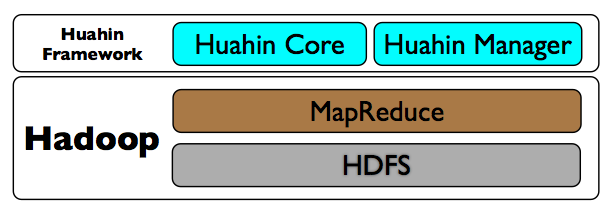

Overview
Huahin Framework is a framework for development to simplify the Hadoop MapReduce(*1), and manage the Hadoop MapReduce Job.
Huahin Framework, make a easy low cost development than normal MapReduce. In addition, Huahin Framework is to develop a flexible native MapReduce purpose, and Pig and Hive are different.
Hive and Pig is sufficient when performing simple data formatting and aggregate. However, if an attempt is made to a difficult process, you will need to write a native MapReduce. MapReduce is not easy developing, and cost of development and test is high.
Huahin Framework has been development in Java to wrap MapReduce. Therefore, If you want to do the lack of features and enhancements, you can also develop native MapReduce.
Architecture
Huahin Framework is a collective term for the framework for processing MapReduce with a focus on Core. Huahin Framework is composed of product Core, Unit, and Manager.
The following figure shows the configuration of each product. Huahin Framework has been configured to run on (MapReduce mainly) Hadoop.
Huahin Core
Huahin Framework Core can be implemented in a simple MapReduce application. Huahin Core can to develop a flexible native MapReduce. Huahin Core are classified into three major components.
The base will be developed using these three components. In addition, MapReduce data I/O format has become a Key/Value. Huahin Core is handling in the Record input data, and grouping, sorting, and the value is present in the Record.
You can register a job can be more than one tool in a single application by using a component called the Runner, efficient tool to call the job.
Now supported are Apache Hadoop 0.20.x, 0.22.x, 1.0.x, distribution CDH3 of Cloudera, Amazon Elastic MapReduce (and later, EMR), MapReduce Version 1 (MRv1). MRv2 YARN is not supported.
For more information, see the following site.
Huahin Unit
Huahin Unit is a test driver to test the Huahin Core. Driver is based on JUnit (system v4) and the MRUnit, has become a test driver that specializes in Huahin Core, you can do a simple test than using a normal MRUnit. Are classified into three drivers also Huahin Unit.
For more information, see the following site.
Huahin Manager
Huahin Manager REST API is replaced with the Hadoop command in products for managing MapReduce Job. It also has its own queue management and a different work queue of Hadoop. If you select a scheduler in the Hadoop Fair Scheduler, you can limit the number of Job can run simultaneously. The main function is as follows:
Now supported are Apache Hadoop 0.20.x, 0.22.x, 1.0.x, distribution CDH3 of Cloudera, MapReduce Version 1 (MRv1).
Note that the package of Apache and Cloudera is different in each package.
EMR with respect to the registration of Job, with respect to queue management is not supported (not used). Now, the execution of the Job (including continuous run), reference can be done in the EMR. To Kill the Job will terminate the EMR itself. For example, you must terminate the EMR if I start the Job by mistake, or wait for the end of the Job. (Log in to the master that instance, you can Kill the Job) You would in vain if you start the dozens, would cause the cost. Kill the Job You can use the REST API of Huahin Manager.
For more information, see the following site.
Huahin Manager
*3 HDFS
Huahin Examples
Huahin Examples is an example run using the Huahin Core. Equipped with the example of several. Perform the development of applications with reference to this example. Example that are currently registered are as follows. Example that is registered, is an application to manipulate all the Web log.
For more information, see the following site.
Huahin Examples